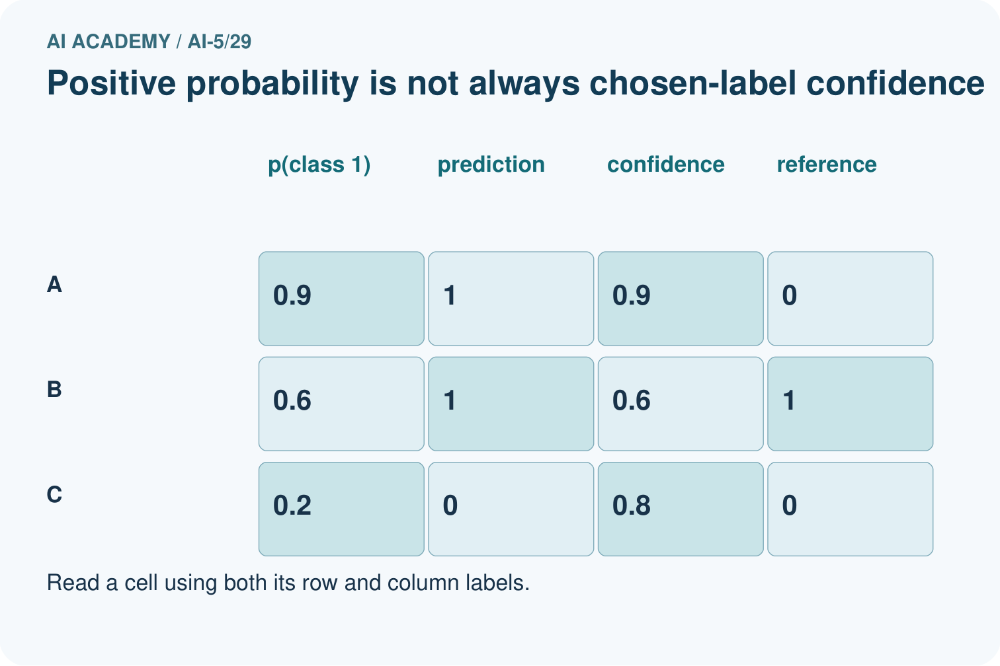
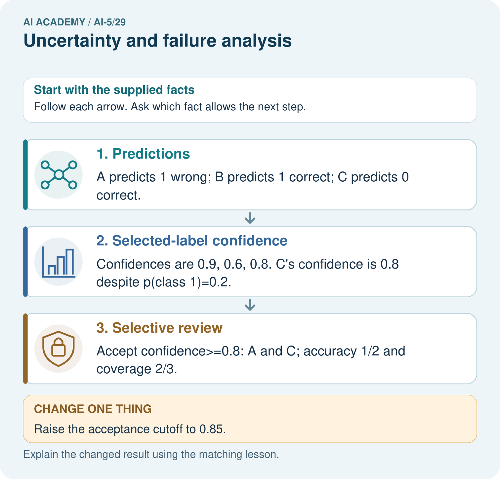

AI Academy · Level 5 · Grade 10 · Week 29 · Student lesson
Uncertainty and failure analysis
Learn to understand, design, build, test and explain AI systems responsibly.
Project: Image-pattern Network Investigation
Before you start
Last week a model was correct on two constructed validation examples. Why did that not prove it would work reliably on new examples?
Plan time to read, investigate and explain. Keep predictions separate from observations.
Student lesson · 1 of 17
Your mission
Your learning target
I can distinguish a predicted class, confidence score and observed correctness.
I can calculate accuracy and coverage for a review policy.
I can investigate failure patterns without claiming an untested cause.
Remember before reading
Close your notes first. A rough first answer helps us choose the right starting point; it is not a score for your ability.
Without opening the old lesson, explain one key idea from Transfer learning. Give an example and a mistake that the idea helps you avoid.
Without opening the old lesson, explain one key idea from Embeddings and neighbourhoods. Give an example and a mistake that the idea helps you avoid.
Without opening the old lesson, explain one key idea from Training a small image model. Give an example and a mistake that the idea helps you avoid.
After trying, check the relevant lesson or ask your teacher. Change the part of your explanation that the evidence shows was wrong.
This week you will practise:
Distinguish a predicted class, confidence score and observed correctness
Calculate accuracy and coverage for a review policy
Investigate failure patterns without claiming an untested cause
Retrieve what you already know
Last week a model was correct on two constructed validation examples. Why did that not prove it would work reliably on new examples?
This week’s end goal
By the end, I can explain uncertainty and failure analysis using a traced example and a stated limitation.
Student lesson · 2 of 17
Notice the evidence
A model can be confidently wrong. Use these supplied outputs for a fictional image classifier: class 1 means a triangle is present; class 0 means it is absent. The values p1 are probability estimates for class 1, invented for this exercise rather than produced by a trained model. Predict 1 when p1 >= 0.5 and 0 otherwise. The selected-class confidence is max(p1, 1 - p1).
| Case and image | p1 | Reference label |
|---|---|---|
| A clear | 0.95 | 1 |
| B blurred | 0.90 | 0 |
| C clear | 0.80 | 1 |
| D blurred | 0.60 | 0 |
| E clear | 0.45 | 0 |
| F blurred | 0.10 | 1 |
A predicts 1 with confidence 0.95 and is correct. F predicts 0 with confidence 0.90 and is wrong: p1 = 0.10 is not low confidence in the selected class. Reference labels are supplied for this exercise; real investigations must check their quality too.
A score alone cannot establish reliability. Calibration asks whether, across many comparable cases, predictions assigned a probability such as 0.90 are correct about 90 percent of the time. One correct or incorrect case cannot answer that question.
Student lesson · 3 of 17
See how it works
The predictions for A through F are 1, 1, 1, 1, 0, 0. A, C and E are correct, so overall accuracy is 3 / 6 = 50 percent. There are two false positives (B and D), one false negative (F), two true positives and one true negative. Different errors can matter differently; a single accuracy number hides that distinction.
rows = [(0.95, 1), (0.90, 0), (0.80, 1),
(0.60, 0), (0.45, 0), (0.10, 1)]
def report(rows, cutoff):
if not rows or not 0.5 <= cutoff <= 1:
raise ValueError("Need rows and cutoff in [0.5, 1]")
correct = accepted = accepted_correct = 0
for p1, label in rows:
if not 0 <= p1 <= 1 or label not in (0, 1):
raise ValueError("Invalid score or label")
pred = int(p1 >= 0.5)
ok = int(pred == label)
correct += ok
if max(p1, 1 - p1) >= cutoff:
accepted += 1
accepted_correct += ok
return (correct / len(rows), accepted / len(rows),
accepted_correct / accepted if accepted else None)
print(report(rows, 0.8)) # (0.5, 4/6, 0.5) approximatelyThe function returns overall accuracy, coverage and accuracy among accepted cases. It assumes numeric scores and binary labels. None means no cases were accepted, so accepted-case accuracy is undefined, not zero or perfect. Keep counts with proportions and declare the comparison at the boundary.
Connect the picture and the explanation
Point to the input, the deciding step and the result in this week’s visual. Explain the same step in ordinary words. A picture helps when you can say what each part represents.
Student lesson · 4 of 17
Compare the cases
Compare a familiar case with a changed case
For all six cases, list false positives and false negatives, count true positives and true negatives, and calculate overall accuracy. Why might a single accuracy hide useful information?
Change one thing in the pictured case
Change: Raise the acceptance cutoff to 0.85.
Prediction: Only A is accepted: accuracy 0/1, coverage 1/3.
Reason: The most confident supplied case is wrong; a stricter cutoff is not guaranteed to improve this set’s accuracy.
Student lesson · 5 of 17
Words that unlock the idea
| Word | Meaning |
|---|---|
| Confidence score | The model’s score for its selected class, which may not match observed reliability |
| Calibration | Agreement between predicted probabilities and observed frequencies across many comparable cases |
| Abstention | Withholding an automatic prediction and following a declared alternative process |
| Coverage | The fraction of all cases on which a system makes an automatic prediction |
Student lesson · 6 of 17
Follow a worked example
Confidence does not remove every error
Deferred cases are not automatically repaired. A review workflow needs an assigned reviewer, suitable evidence, a decision record and an outcome check. Report review workload and the final system’s results separately; we have no reviewer outcomes here. Do not erase deferred cases from the report or count them as correct.
Learn from the worked case
Cover the result before checking it. Say what is given, choose the procedure, and follow one step at a time. Then uncover the result and explain your first mismatch. Ask why a step is allowed, not only what number it produces.
A pictorial worked case: Uncertainty and failure analysis
Keep positive-class probability separate from confidence in the chosen label.
The facts we will use
Supplied p(class 1): A: 0.9 reference 0; B: 0.6 reference 1; C: 0.2 reference 0. Predict class 1 at p>=0.5; confidence=max(p, 1-p).
All inputs and outcomes in this worked example are invented classroom data; no real model run is claimed.


Read the picture one step at a time
Why this result follows
Positive-class probability and confidence in the chosen label differ when the predicted class is zero. For C, a class-one probability of 0.2 gives class-zero confidence 0.8 under this toy rule. Selective accuracy counts only accepted cases; coverage counts how many were accepted. A stricter cutoff can retain a confidently wrong case and lower accuracy on this supplied set.
What this example does not establish
Supplied scores are not proven calibrated. Review policies need representative held-out evidence and clear handling of rejected cases.
Read the labelled picture: What is C’s positive-class probability and chosen-label confidence? Point to the relevant step in the picture, then write the changed result and the rule or evidence that supports it.
Change one thing: Raise the acceptance cutoff to 0.85. Predict the result before checking the explanation. What remains the same?
Student lesson · 7 of 17
Find and repair a mistake
All three clear images are correct; all three blurred images are wrong in this constructed set. Blur is a candidate explanation, not an established cause: other differences, reference-label errors or preprocessing bugs could be involved. Record case ID, input conditions, model and preprocessing version, score, prediction and checked reference label.
First inspect B, D and F and check input order, resizing and label quality. Then plan new examples that vary blur while keeping the underlying image and label fixed. Keep related versions of the same source image in one data split; compare both versions within the reserved group. Do not repair cases and report scores on those same cases as independent evidence.
Uncertainty can arise from ambiguous inputs, limited training evidence or unfamiliar conditions. A single confidence score does not identify the cause and may stay high on unfamiliar inputs. Collect evidence before selecting a remedy.
Locate the earliest unsupported step
At cutoff 0.80, list accepted and deferred cases, coverage and accepted-case accuracy. Can you calculate final accuracy after human review from the supplied data? What does the report function return for accepted-case accuracy at cutoff 0.99?
Student lesson · 8 of 17
Practise together
For B, E and F, give the predicted class, selected-class confidence and correctness. Explain why p1 = 0.10 does not mean F has low confidence in its predicted class.
Practise with less help: Count both types of error
Use workbook W2 for the connected example “Uncertainty and failure analysis”. First fill the input and rule boxes. Try the middle steps before asking for a hint. After a hint, try the next step yourself.
| Plan | Do | Check |
|---|---|---|
| What is given? Which rule or procedure applies? | Record each intermediate step. | Does the result follow? What remains unknown? |
Explain your trace to a partner. Your partner points to one step to check. Swap roles on the next case. Each person writes their own explanation.
Check your reasoning
Use the worked case for Uncertainty and failure analysis. Proposed explanation: “A low p1 always means low confidence”. Decide whether this explanation is supported. Point to the step or supplied fact that decides; explain your repair if needed.
Answer on your own before discussion. If you are unsure, say which step you need help with.
Explain the picture
What is C’s positive-class probability and chosen-label confidence? Point to the relevant step in the picture, then write the changed result and the rule or evidence that supports it.
This is supported practice. Keep the separately named independent case for an attempt before feedback.
Student lesson · 9 of 17
Run the investigation
Predict, investigate and preserve the evidence
For all six cases, list false positives and false negatives, count true positives and true negatives, and calculate overall accuracy. Why might a single accuracy hide useful information?
rows = [(0.95, 1), (0.90, 0), (0.80, 1),
(0.60, 0), (0.45, 0), (0.10, 1)]
def report(rows, cutoff):
if not rows or not 0.5 <= cutoff <= 1:
raise ValueError("Need rows and cutoff in [0.5, 1]")
correct = accepted = accepted_correct = 0
for p1, label in rows:
if not 0 <= p1 <= 1 or label not in (0, 1):
raise ValueError("Invalid score or label")
pred = int(p1 >= 0.5)
ok = int(pred == label)
correct += ok
if max(p1, 1 - p1) >= cutoff:
accepted += 1
accepted_correct += ok
return (correct / len(rows), accepted / len(rows),
accepted_correct / accepted if accepted else None)
print(report(rows, 0.8)) # (0.5, 4/6, 0.5) approximately| Record | Your evidence |
|---|---|
| Given input and fixed rule | |
| Prediction before checking | |
| Actual result, or “not run” | |
| First mismatch and one explanation | |
| Boundary or missing input and expected response |
On paper, trace the supplied procedure. If code is provided, predict before running it in a local practice file. Never write an expected answer as though it were an observed run.
Plan → try → check
Before trying: what do I expect, and why? While trying: which step could first go wrong? Afterwards: what did I actually observe, and what should change? Keep “not run” if you only traced the procedure.
Student lesson · 10 of 17
Build your understanding
Explain → apply → challenge
For B, E and F, give the predicted class, selected-class confidence and correctness. Explain why p1 = 0.10 does not mean F has low confidence in its predicted class.
At cutoff 0.80, list accepted and deferred cases, coverage and accepted-case accuracy. Can you calculate final accuracy after human review from the supplied data? What does the report function return for accepted-case accuracy at cutoff 0.99?
All three blurred cases are wrong. A team claims blur caused the errors and plans to put clear images in training and their blurred copies in final evaluation. Identify the unsupported claim and the split problem; propose a better investigation.
Student lesson · 11 of 17
Connect your project
Add a labelled uncertainty and failure analysis evidence sheet to Image-pattern Network Investigation. Show how you can distinguish a predicted class, confidence score and observed correctness. Use the supplied fictional case and keep its inputs, intermediate steps, calculation or prediction, and limitation. Connect this record to last week’s record; a matching answer without a trace is insufficient.
| Project evidence | Record |
|---|---|
| Component and version | |
| Inputs permitted at prediction time | |
| Trace and comparison with earlier work | |
| Failure, limit and human review |
Evidence for your project
For your Image-pattern Network Investigation, save the input, procedure, observed result and limitation of this check. Label this worked example as practice; use a different, previously unreviewed case when checking independent understanding.
Student lesson · 12 of 17
Show what you know
Choose review thresholds and model changes using training and validation evidence, before final evaluation. Report total cases, overall errors, accepted errors, coverage, deferred workload and subgroup results. For tiny groups, give counts and avoid strong claims about future rates. Higher cutoffs do not guarantee higher observed accuracy or safe decisions.
Keep a baseline and record unsuccessful changes too. Next week examines dataset shift: performance can change when the inputs or relationships encountered in use differ from those seen during development.
All three blurred cases are wrong. A team claims blur caused the errors and plans to put clear images in training and their blurred copies in final evaluation. Identify the unsupported claim and the split problem; propose a better investigation.
Student lesson · 13 of 17
Study a complete case
Complete evidence record
Confidence does not remove every error
Follow the input through the stated procedure to its result. Cover the result first, predict it, then explain every intermediate step. The text/table accompanies the figure so the example can be read without colour.
Student lesson · 14 of 17
Try a new case independently
Independent case: Analyse new outputs independently
Four new cases have (p1, reference label): K (0.85, 0), L (0.70, 1), M (0.30, 0), N (0.05, 0). Give predictions and confidences, overall accuracy, and accepted cases at cutoff 0.80. Calculate coverage and accepted-case accuracy. Does this policy improve accuracy on the accepted subset here?
Attempt this case before feedback. Record any help. Earlier examples below are further practice; a case already practised with feedback cannot establish fresh transfer.
Attempt this without hints
Four new cases have (p1, reference label): K (0.85, 0), L (0.70, 1), M (0.30, 0), N (0.05, 0). Give predictions and confidences, overall accuracy, and accepted cases at cutoff 0.80. Calculate coverage and accepted-case accuracy. Does this policy improve accuracy on the accepted subset here?
Record support used: none, hint or teacher explanation. After feedback, a different case is needed to demonstrate independence.
Use feedback to improve
Attempt the independent case before hints. Record whether you worked alone, used a hint or followed a model. After feedback, fix the first unsupported step and explain why it changed. A later check uses a changed case, not a copied answer.
Student lesson · 15 of 17
Your lesson route
Start with this question: Keep positive-class probability separate from confidence in the chosen label.
| By the end, I can | How I will show it |
|---|---|
| Distinguish a predicted class, confidence score and observed correctness | Explain the deciding step, show a trace or test, and state one limit. |
| Calculate accuracy and coverage for a review policy | Explain the deciding step, show a trace or test, and state one limit. |
| Investigate failure patterns without claiming an untested cause | Explain the deciding step, show a trace or test, and state one limit. |
Remember → watch and explain → try with help → investigate → try independently → keep project evidence. Your teacher may spread this lesson across several classes.
Keep your first prediction. Compare it with what the evidence shows and explain any change.
Student lesson · 16 of 17
Finish and return
Close your notes. Explain this goal in your own words: Distinguish a predicted class, confidence score and observed correctness
If you are unsure, return to the worked picture and explain one arrow. If you are ready, change an input or assumption and justify your prediction.
Save your workbook evidence. At the next review, try a different case before opening your old answer.
Student lesson · 17 of 17
Supported practice, repair and portfolio
Use this supported practice once, in the browser or on paper. Keep the reserved independent assessment for a separate first attempt before teacher feedback.
Keep positive-class probability separate from confidence in the chosen label.
Practice 1: explain the deciding evidence
Which labelled step matches this detail? Accept confidence>=0.8: A and C; accuracy 1/2 and coverage 2/3.
1. Selected-label confidence
2. Selective review
3. Predictions
Hint if needed: Read the steps in the pictorial case. Match the supplied detail to the stage that performs or records it.
After your attempt, compare with the supported explanation: Selective review Accept confidence>=0.8: A and C; accuracy 1/2 and coverage 2/3. Positive-class probability and confidence in the chosen label differ when the predicted class is zero. For C, a class-one probability of 0.2 gives class-zero confidence 0.8 under this toy rule. Selective accuracy counts only accepted cases; coverage counts how many were accepted. A stricter cutoff can retain a confidently wrong case and lower accuracy on this supplied set.
Practice 2: explain the deciding evidence
Changed-case practice: Raise the acceptance cutoff to 0.85. Which conclusion is supported by the supplied facts?
1. This one example guarantees correct results for every future input.
2. We can decide the result without examining the changed input or the procedure.
3. Only A is accepted: accuracy 0/1, coverage 1/3.
Hint if needed: Use the changed condition and the deciding step in the pictorial trace. The answer must say what follows from those facts.
After your attempt, compare with the supported explanation: Only A is accepted: accuracy 0/1, coverage 1/3. The most confident supplied case is wrong; a stricter cutoff is not guaranteed to improve this set’s accuracy.
Repair a missing building block
Review Transfer learning (ai-5/28). Goal: Trace a reused feature extractor and a newly fitted output head. Short practice: Which part was trained for the new task? Point to the relevant step in the picture, then write the changed result and the rule or evidence that supports it.. Return to this week and explain what you changed.
Review Embeddings and neighbourhoods (ai-5/26). Goal: Look up a vector using a token ID and preserve sequence shape. Short practice: What would justify claiming nearby vectors mean related topics? Point to the relevant step in the picture, then write the changed result and the rule or evidence that supports it.. Return to this week and explain what you changed.
Review Training a small image model (ai-5/23). Goal: Trace a complete image model with fixed features and one trained weight. Short practice: Does lower training loss alone establish that four updates generalise better? Point to the relevant step in the picture, then write the changed result and the rule or evidence that supports it.. Return to this week and explain what you changed.
Predict, run and debug
The browser lab lets you edit the supported Python examples already included in this lesson. Predict first, run, inspect the actual output or error, change one input, then run again. Keep code, predictions, actual results and a reasoned revision together. On paper, label your result as a trace rather than an execution.
Keep your completed work
Use Download completed work in the hosted lesson to export your answers, reflections, practice feedback and code-run evidence. Open the HTML copy to read or print it. Drafts stay in this browser when storage is available; clear drafts on a shared device.